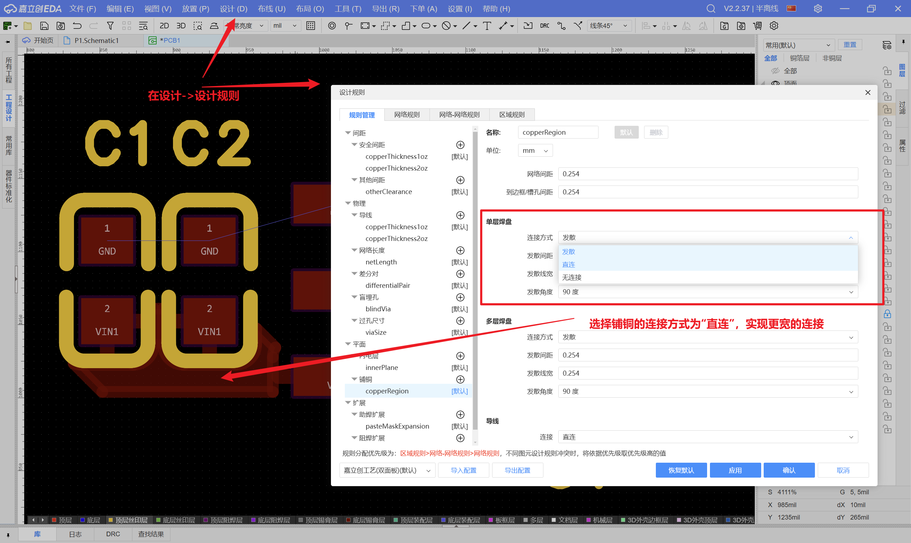
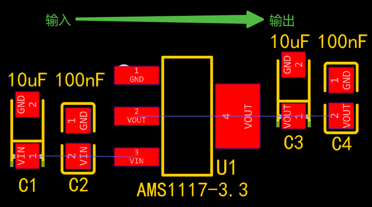
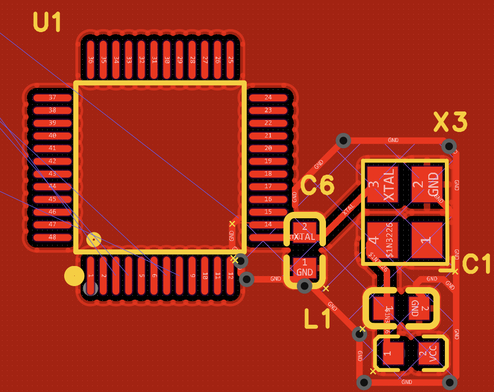

考试的考题基本上是画一个最小系统板，搭配一个外设。
此次学习完成设计题中电路模块的设计要点。
注意事项
电源：LDO
电源模块里边有两种电源，一种是LDO，另一种是DCDC。
如何直连铺铜

或者通过填充完成，与铺铜效果一致。
GND焊盘使用铺铜或全填充连接，输入输出GND尽可能位于一块铜皮上，同时在底层铺铜（注意避开电感区域），在GND焊盘附近打上过孔进行连通，缩短电源的回流路径；若芯片底部有散热焊盘，需要在散热焊盘处多均匀放置一些过孔用于散热。
如何设置所有导线宽度
布局设计要点
按照电源信号的输入/输出路径，布局时按一字型或者L型摆放。
电容按先大后小顺序摆放，就近输入/输出管脚。

走线设计要点
- 电源输入输出信号可直接全填充或粗导线连接，过最大电流。
- 输入信号必须先过电容再到芯片，输出走线也需要先过电容再输出。
电源：DC-DC
过滤——过孔的对齐
布局设计要点
- 电容位置：旁路去耦电容靠近输入/输出端摆放，与原理图保持一致，先大后小排列
- 开关环路：PH引脚是电源IC的开关节点，那么电感和续流二极管应尽量靠近PH引脚摆放，尽可能地缩小PCB的导体面积，防止电容过度耦合和减小电流环路面积
- 开关噪声：开关电源的电感与二极管等开关节点处是噪声最大的地方，对干扰敏感的器件应远离该区域（如晶振、传感器等）
晶振
晶振，全称晶振振荡器，是一种利用石英晶体的压电效应制成制成的谐振器件。
- 尽量靠近主控IC，远离干扰源，净空，包地
天线
天线应放置在PCB板边，走线尽可能短，包地
净空：投影面的所有层都不能走线。
- 射频走线区（馈线、匹配网络附近）常常要求顶层和底层都做接地铜皮，并打地过孔围栏。
- 天线本体辐射区通常要按封装手册留净空，很多天线下面反而不能铺铜。

包地线莫名消失？
禁止区域
Appendix
为什么摆放电容要先大后小？
大电容负责低频和大电流瞬态，提供储能缓冲；小电容负责高频噪声抑制。沿电源路径按“先大后小”摆放，可以让不同频段的电流各走合适回路，降低纹波与干扰。
但更关键的是高频小电容要尽量贴近芯片电源管脚，回路面积越小越好。
最小系统
最小系统是让芯片“能够稳定上电、运行、下载程序”的最基本电路集合。
常见MCU最小系统一般包括：
- 供电电路（VCC/GND、去耦电容）
- 复位电路（上拉/按键/RC复位）
- 时钟电路（外部晶振或内部时钟配置）
- 下载调试接口（如SWD/JTAG/UART）
设计要点：
- 每个电源脚附近放置0.1uF去耦电容，并就近接地。
- 复位引脚避免长线，远离高噪声开关节点。
- 晶振和负载电容尽量靠近芯片时钟脚，走线短且对称。
- 调试接口引脚预留测试点，便于下载和故障定位。
- 输入环路越小越好
什么是线性电源
线性稳压器(LDO)，也称为线性电压调节器，通常输入电压要高于输出电压，用于电路中的降压功能。线性稳压器能够提供稳定的输出电压，低噪声，高效率，适用于对噪声和稳定性要求较高的应用。
- 效率跟压差相关
- LDO只能降压不能升压
什么是DCDC
建议优先阅读《电力电子技术》第五章：直流变流电源
DC-DC电源通常可以实现高效率的电力转换。
大电流、高电压、高效率以及小信号的需求。